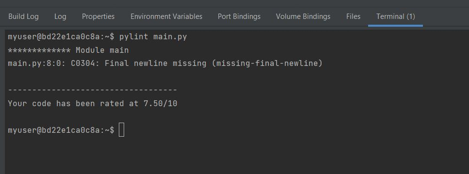
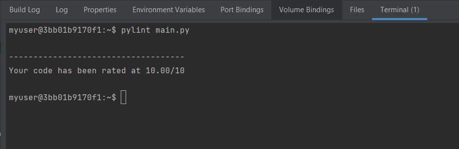

If we’re coding in Java the compiler will usually lend a helping hand. But if we’re coding in a dynamic language like Python we’re on our own: we don’t have a compiler to catch bugs.
Pylint is a tool that checks for errors in Python code, tries to enforce a coding standard and looks for code smells. It can also look for certain type errors, it can recommend suggestions about how particular blocks can be refactored and can offer you details about the code's complexity.
Pylint has a lot of useful errors and warnings. but also a whole lot of highly opinionated assumptions about how our code should look. And fundamentally it treats both opinions and objective problems the same way. There’s a distinction between warnings and errors, but both useful and useless stuff is in the warning category.
Pylint easily installable using pip command.
pip install pylint
From the source distribution, extract the tarball, go to the extracted directory and simply run
python setup.py install
Or you can install it in editable mode, using
python setup.py develop
So here we have a tool that is potentially useful, but unused in practice. What to do?
Luckily Pylint has some functionality that can help: you can configure it to only enable a limited list of lint checks.
First, setup Pylint to do nothing:
If the resulting errors are real problems, fix them. If the errors are utter garbage, delete those checks from the configuration.
After fixing first error message
We do see another error message "Final newline missing (missing-final-newline)". This error message clearly pointing that we have a missing line at the end. Let correct this and see how pylint results us back.
Above example clearly showed us that Pylint has a lot of useful errors and warnings. but also a whole lot of highly opinionated assumptions about how your code should look.
Debuging Code
PyCharm supports pytest, providing many testing features such as:
Parametrization
The Pytest framework makes it easy to write tests to support multiple and complex functional testing for applications and libraries. Pytest enables test parametrization at several levels, such as: